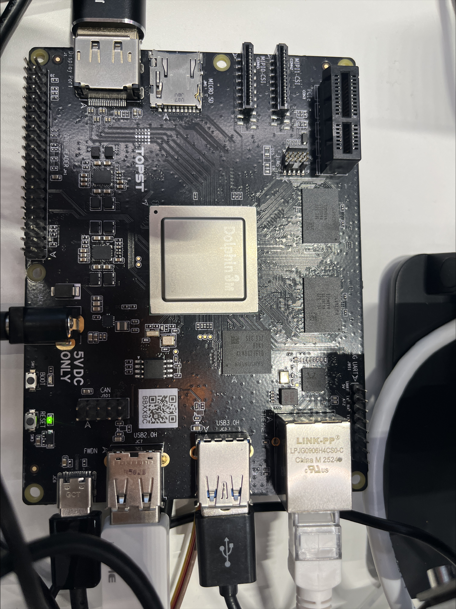
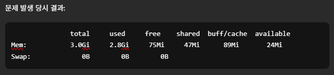
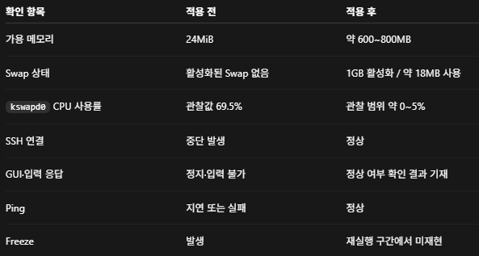

topkswapd0 CPU 69.5%
We have confirmed that the load may be concentrated on page recall operations.
SYSTEM-LEVEL DEBUGGING · EMBEDDED LINUX
While developing a Qt application on Telechips D3-G, we reproduced the phenomenon of GUI, input device, network and Serial Log freezing together and analyzed system indicators.

01
While developing or building a Qt application, the Remote SSH connection was repeatedly lost. At the same time, the Ubuntu GUI, keyboard/mouse, ping response, and serial log also stopped, broadening the scope of the investigation to a system-wide problem rather than a simple network failure.
02
We reproduced the failure, checked the Kernel Log and Serial Log of the previous boot, analyzed system resources and processes, re-executed the same task after applying Swap, and compared the status.
03
EVIDENCE
Instead of drawing conclusions solely from the results of one command, we looked at multiple indicators together.
We have confirmed that the load may be concentrated on page recall operations.

There was little memory left to accommodate the additional work.
PROCESS ANALYSIS
Even when connected from a Windows PC, VS Code Server and extension processes ran on D3-G. We observed RSS from Pylance and ExtensionHost to be around 610MB and 497MB respectively, leading us to include memory strain on the entire development environment as well as Ubuntu GUI and Qt tasks as a causal hypothesis.
RESULT
Under conditions where I could not increase physical RAM, I enabled Swap and ran the same Qt task again.

Scope of Conclusion Results from a repeat run under the same conditions support the hypothesis that memory pressure was involved in the impairment. A single cause is not confirmed until repeated confirmation over a long period of time and multiple times.
PLATFORM INSIGHT